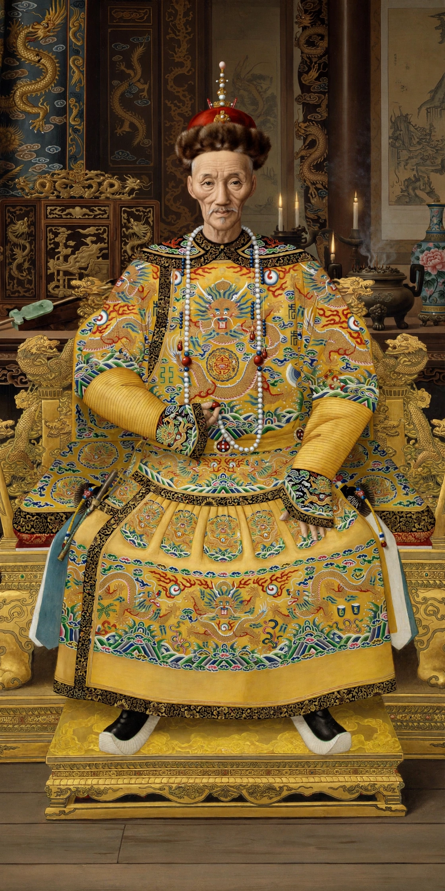

The Daoguang Emperor (16 September 1782 – 26 February 1850), born Mianning, was the seventh Qing emperor of China, reigning from 1820 to 1850. His reign was marked by the First Opium War, economic strain from silver outflows, and the beginnings of internal rebellions that would engulf his successor.

Second son of the Jiaqing Emperor, Mianning distinguished himself defending the Forbidden City during the Eight Trigrams uprising of 1813 and was secretly named heir.
Daoguang attempted frugal government, wearing patched clothes and cutting court expenses. He confronted the opium crisis by appointing Lin Zexu as Imperial Commissioner in Canton, whose confiscation and destruction of opium in 1839 precipitated war with Britain. Defeat led to the Treaty of Nanking (1842), ceding Hong Kong and opening five treaty ports.
Historians view Daoguang as diligent but constrained, presiding over fiscal decline, the White Lotus aftermath, and growing Western pressure. He died in 1850 and was succeeded by his fourth son, Yizhu, the Xianfeng Emperor.